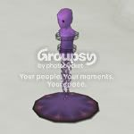

Data MonterS Map เก็บเวล 100+
UNDEAD ArmorLevel
ArmorLevel : 136
HP : 87,890
EXP / Job EXP : 155,400 / 174,750
Attribute :
 Personality
Personality : Link Armer
Map : White DesertB / Missed Fragment RoomC / Infihity Gallery
Item : Titanium Lump / Soul Dust / Throat Candy / Droped Item1 /
Resurrection Potion /
Magic CrystalArmor(Red)Level : 148
HP : 95,680
EXP / Job EXP : 514,800 / 546,300
Attribute :
Personality : Link Armer
Map : White DesertA / Infihity Gallery
Item : Platinum Lump / Soul Dust / Throat Candy / Droped Item1 /
Resurrection Potion /
Magic CrystalANIMAL Poc PocLevel
Poc PocLevel : 144
HP : 87,890
EXP / Job EXP : 331,800 / 331,800
Attribute :

 Personality
Personality : Link All
Map : White DesertA / White DesertB / Missed Fragment RoomA / Infihity Gallery
Item :
Face Cut / Sleeping Pill / Great Smoke Ham / Throat Candy /
Face Cut Poc Poc(Red)Level
Poc Poc(Red)Level : 152
HP : 108,590
EXP / Job EXP : 564,450 / 564,450
Attribute :
Personality : Link All
Map : White DesertA / Missed Fragment RoomC / Infihity Gallery
Item : Sleeping Pill /
Face Cut / Great Smoke Ham / Throat Candy
Poc Poc(Purple)Level : 157
HP : 135,080
EXP / Job EXP : 727,200 / 636,750
Attribute :
Personality : Link All
Map : Infihity Gallery
Item : Nightmare Cut /
Face Cut / Smoke Dragon Meat / Throat Candy /
Nightmare Cut /
Face CutHuman Alcey(Black)Level
Alcey(Black)Level : 115
HP : 66,666
EXP / Job EXP : 12,945 / 13,695
Attribute :
 Personality
Personality : Active
Map : White DesertA / White DesertB / Infihity Gallery
Item : Resurrection Potion /
Daslim Piece /
Grand Sheet / Throat Candy /
Grief WatchINSECTButterfly(Red)Level : 100
HP : 46,590
EXP / Job EXP : 10,470 / 10,500
Attribute :
Personality : Link Butterfly
Map : Missed Fragment RoomA /Missed Fragment RoomB / White DesertA /Infihity Gallery
Item :
Fearful Butterfly's Wing / Phosphorus Dust / Soul Dust / Throat Candy /
Shiny Powder Butterfly(Blue)Level
Butterfly(Blue)Level : 116
HP : 52,500
EXP / Job EXP : 10,902 / 11,070
Attribute :
Personality : Link Butterfly
Map : Missed Fragment RoomA /Missed Fragment RoomB / White DesertA /Infihity Gallery
Item : Fearful Butterfly's Wing / Phosphorus Dust / Soul Dust / Throat Candy /
Fearful Butterfly's Wing /
Shiny PowderMachineCycloneLevel : 105
HP : 51,580
EXP / Job EXP : 10,500 / 10,875
Attribute :
Personality : Non Active
Map : Missed Fragment RoomA / White DesertA / Missed Fragment RoomC / Infihity Gallery
Item : Toothed Wheel / Nut / Droped Item1 /
Grief Watch /
Fortune Wheel Cyclone(Red)Level
Cyclone(Red)Level : 111
HP : 62,580
EXP / Job EXP : 11,340 / 11,775
Attribute :
Personality : Non Active
Map : Missed Fragment RoomB / White DesertA / Infihity Gallery
Item : Toothed Wheel / Silver Part /
Fortune Wheel / Droped Item1 /
Grief WatchPlant AlrauneLevel
AlrauneLevel : 120
HP : 71,980
EXP / Job EXP : 12,525 / 12,840
Attribute :

 Personality
Personality : Non Active
Map : Missed Fragment RoomA / White DesertA / Infihity Gallery
Item :
Alaune's Tentacle / Gigogigo Grass / Droped Item1 /
Grief Watch Alraune(Blue)Level
Alraune(Blue)Level : 125
HP : 75,845
EXP / Job EXP : 18,795 / 18,960
Attribute :
Personality : Non Active
Map : White DesertA / White DesertB / Infihity Gallery
Item : Rune Grass / Droped Item1
 Alraune(Yellow)Level
Alraune(Yellow)Level : 130
HP : 81,110
EXP / Job EXP : 22,365 / 26,580
Attribute :
Personality : Non Active
Map : Infihity Gallery
Item : Alaune's Tentacle / Alaune's Strawberry /
Forbidden Fruit / Droped Item1 /
Alaune's Tentacle /
Alaune's Strawberry Alraune(Black)Level
Alraune(Black)Level : 145
HP : 85,860
EXP / Job EXP : 310,350 / 327,000
Attribute :
Personality : Active
Map :
Item : Alaune's Tentacle / Alaune's Strawberry /
Forbidden Fruit / Droped Item1 /
Alaune's Strawberry /
Zedar WoodSpirit JangdokLevel
JangdokLevel : 140
HP : 155,950
EXP / Job EXP : 288,450 / 305,400
Attribute :
Personality : Active
Map : White DesertB / Infihity Gallery
Item : Resurrection Potion / Dark Mata / Riped Magical Book / Dark Cologne / Magic Crystal /
Grief Watch
Jangdok(Purple)Level : 150
HP : 172,590
EXP / Job EXP : 668,700 / 748,350
Attribute :
Personality : Active
Map : White DesertA / Missed Fragment RoomC / Infihity Gallery
Item : Dark Mata / Magic Potion / Dark Cologne / Power Crystal /
Grief Watch Jangdok(Black)Level
Jangdok(Black)Level : 160
HP : 209,586
EXP / Job EXP : 763,950 / 816,300
Attribute :
Personality : Active
Map : Infihity Gallery
Item : Resurrection Potion /
Dark Mata / Riped Magical Book / Dark Cologne / Critical Crystal /
Grief Watchเพิ่มแมพให้